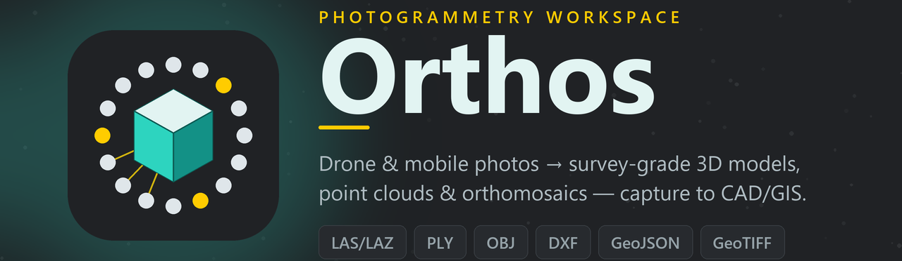
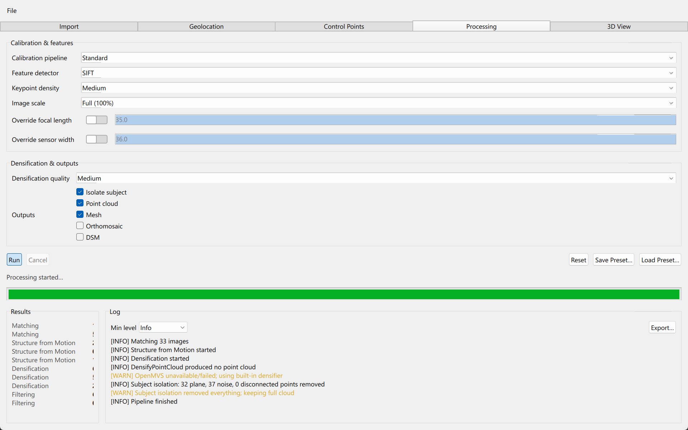

// bounty · photogrammetry/3d
Orthos — drone & mobile photos → 3D / GIS
฿ 500,000,000
github ↗
Windows desktop photogrammetry in C++17/20 · Qt 6 / QML — turns drone & mobile photos into georeferenced 3D point clouds, meshes, and orthomosaics. A full image-to-3D pipeline with RTK/PPK georeferencing, on-model measurement, and CAD/GIS exports.
- › Layered modular monolith — a 9-stage pipeline (features → SfM → bundle adjust → dense → mesh → georeference) runs off the UI thread for 1000+ image projects
- › RTK/PPK georeferencing with a GCP / checkpoint fit, CRS-correct throughout (ellipsoidal vs orthometric height kept distinct) via PROJ / GDAL
- › Built on OpenCV, Ceres, Eigen & OpenMVS; clean exports to LAS/LAZ, PLY/OBJ, DXF, GeoJSON, GeoTIFF — straight into AutoCAD / QGIS
C++20
Qt 6 / QML
OpenCV
Ceres
PROJ
GDAL
OpenMVS
SQLite
CMake
vcpkg
// bounty_notes
-
9pipeline stages
-
10C++ modules
-
1000+images / project
-
7export formats
// reconstruction_pipeline
ingest
→
features
→
match
→
SfM
→
bundle adjust
→
dense
→
mesh
→
georeference
→
export
// orthos/src/geo/Measure.cpp — on-model measurement MeasurementResult evaluate(MeasureMode mode, const std::vector<Vec3d>& points) { MeasurementResult r; r.mode = mode; r.pointCount = points.size(); switch (mode) { case MeasureMode::Distance: // straight line, first→last if (points.size() >= 2) { r.value = polylineLength({points.front(), points.back()}); r.valid = true; } break; case MeasureMode::Area: // shoelace on the XY plane if (points.size() >= 3) { r.value = polygonAreaXY(points); r.valid = true; } break; case MeasureMode::Height: // Δz between endpoints if (points.size() >= 2) { r.value = std::abs(points.back().z - points.front().z); r.valid = true; } break; } return r; }
